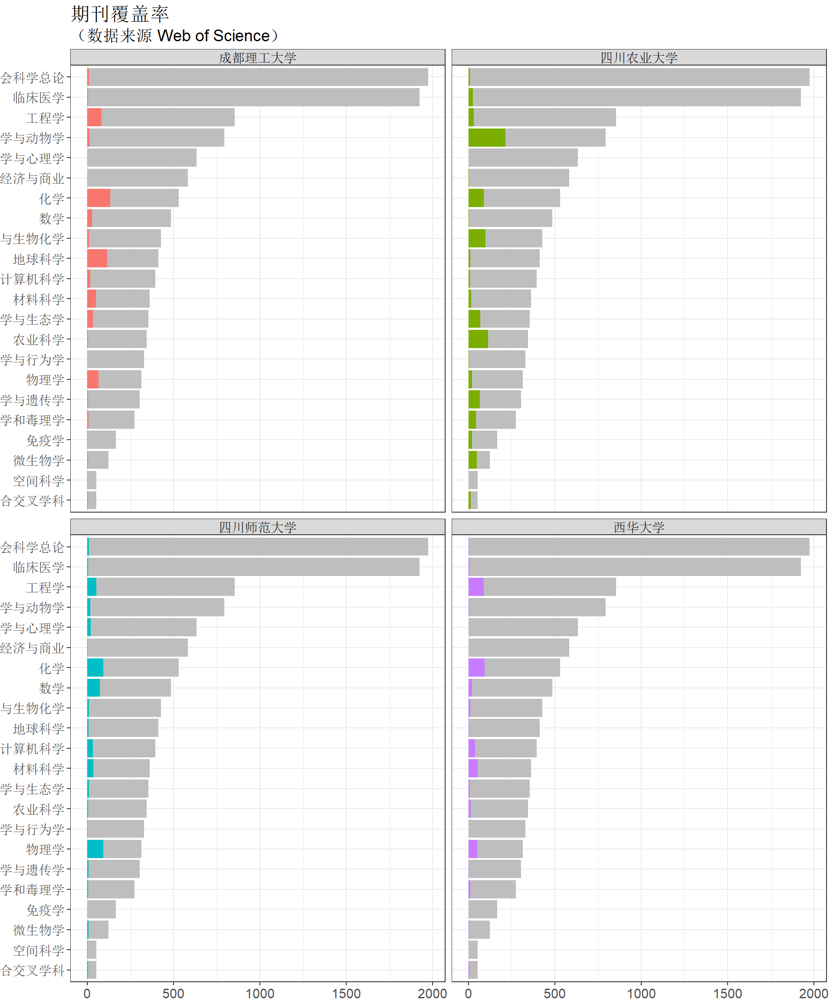

第 6 章 期刊使用情况
6.1 JCR简介
《期刊引证报告》（Journal Citation Reports，简称 JCR）是科睿唯安（原汤森路透知识产权与科技事业部）的报告产品3。 该年度报告为全球最权威最具影响力的学术期刊提供了多纬度的期刊评估指标，包括著名的期刊影响因子（Journal Impact Factor）。
作为独立于出版商的机构，科睿唯安自1973 年以来发布的 JCR，一直基于客观的统计数据来评估期刊在学术文献中的地位。相关分析包括引证数据、影响力指标、以及来自业内领先的涵盖自然科学、社会科学及艺术和人文学科领域的引文索引数据库 Web of Science 中数以百万计的期刊被引及施引数据。
6.2 JCR初探
stat_ESI <- esi_plus_cas_IF_set %>%
group_by(Category_ESI_cn) %>%
summarise(total_num_of_ESI = n_distinct(ISSN),
total_num_of_cn_ESI = sum(is_chinese)) %>%
arrange(desc(total_num_of_ESI))
#stat_ESI| Category_ESI_cn | total_num_of_ESI | total_num_of_cn_ESI |
|---|---|---|
| 社会科学总论 | 1973 | 0 |
| 临床医学 | 1924 | 12 |
| 工程学 | 853 | 16 |
| 植物学与动物学 | 793 | 6 |
| 精神病学与心理学 | 633 | 0 |
| 经济与商业 | 583 | 1 |
| 化学 | 530 | 18 |
| 数学 | 485 | 9 |
| 生物学与生物化学 | 428 | 4 |
| 地球科学 | 413 | 14 |
| 计算机科学 | 394 | 5 |
| 材料科学 | 362 | 14 |
| 环境科学与生态学 | 355 | 7 |
| 农业科学 | 344 | 2 |
| 神经系统学与行为学 | 330 | 2 |
| 物理学 | 313 | 10 |
| 分子生物学与遗传学 | 303 | 3 |
| 药理学和毒理学 | 273 | 3 |
| 免疫学 | 165 | 1 |
| 微生物学 | 123 | 0 |
| 空间科学 | 54 | 1 |
| 综合交叉学科 | 53 | 2 |
6.3 中国SCI期刊
$材料科学| 学科 | 期刊全名 | 中科院分区 | 影响因子 |
|---|---|---|---|
| 材料科学 | Journal Of Materials Science & Technology | 3 | 3.609 |
| 材料科学 | Particuology | 3 | 2.785 |
| 材料科学 | Progress In Natural Science-Materials International | 3 | 2.572 |
| 材料科学 | Transactions Of Nonferrous Metals Society Of China | 4 | 1.795 |
| 材料科学 | Rare Metals | 4 | 1.500 |
| 材料科学 | Acta Metallurgica Sinica-English Letters | 4 | 1.341 |
| 材料科学 | New Carbon Materials | 4 | 1.171 |
| 材料科学 | Journal Of Iron And Steel Research International | NA | 1.126 |
| 材料科学 | Journal Of Central South University | 4 | 0.761 |
| 材料科学 | Acta Metallurgica Sinica | 4 | 0.704 |
| 材料科学 | Journal Of Wuhan University Of Technology-Materials Science Edition | 4 | 0.524 |
| 材料科学 | Journal Of Inorganic Materials | NA | 0.490 |
| 材料科学 | China Foundry | 4 | 0.360 |
| 材料科学 | Rare Metal Materials And Engineering | NA | 0.290 |
| 学科 | 期刊全名 | 中科院分区 | 影响因子 |
|---|---|---|---|
| 地球科学 | Acta Geologica Sinica-English Edition | 3 | 2.506 |
| 地球科学 | Petroleum Exploration And Development | 3 | 2.065 |
| 地球科学 | Science China-Earth Sciences | 3 | 2.058 |
| 地球科学 | Advances In Atmospheric Sciences | 4 | 1.869 |
| 地球科学 | Petroleum Science | 4 | 1.624 |
| 地球科学 | Journal Of Geographical Sciences | NA | 1.623 |
| 地球科学 | Journal Of Earth Science | NA | 1.500 |
| 地球科学 | Acta Petrologica Sinica | 4 | 1.238 |
| 地球科学 | Journal Of Meteorological Research | 4 | 1.022 |
| 地球科学 | Applied Geophysics | 4 | 1.000 |
| 地球科学 | Chinese Journal Of Geophysics-Chinese Edition | 4 | 0.880 |
| 地球科学 | Acta Oceanologica Sinica | NA | 0.728 |
| 地球科学 | Journal Of Ocean University Of China | 4 | 0.569 |
| 地球科学 | Journal Of Tropical Meteorology | 4 | 0.288 |
| 学科 | 期刊全名 | 中科院分区 | 影响因子 |
|---|---|---|---|
| 分子生物学与遗传学 | Cell Research | 1 | 15.393 |
| 分子生物学与遗传学 | Journal Of Genetics And Genomics | 2 | 4.066 |
| 分子生物学与遗传学 | Journal Of Zhejiang University-Science B | 4 | 1.815 |
| 学科 | 期刊全名 | 中科院分区 | 影响因子 |
|---|---|---|---|
| 工程学 | Journal Of Bionic Engineering | 3 | 2.325 |
| 工程学 | Science China-Technological Sciences | 3 | 1.938 |
| 工程学 | Chinese Journal Of Aeronautics | 4 | 1.614 |
| 工程学 | Journal Of Hydrodynamics | 4 | 1.563 |
| 工程学 | Acta Mechanica Sinica | 4 | 1.545 |
| 工程学 | Applied Mathematics And Mechanics-English Edition | 3 | 1.538 |
| 工程学 | Journal Of Zhejiang University-Science A | NA | 1.215 |
| 工程学 | Acta Mechanica Solida Sinica | 4 | 1.149 |
| 工程学 | Earthquake Engineering And Engineering Vibration | 4 | 0.847 |
| 工程学 | Journal Of Systems Science And Systems Engineering | 4 | 0.766 |
| 工程学 | Journal Of Thermal Science | 4 | 0.678 |
| 工程学 | China Ocean Engineering | 4 | 0.674 |
| 工程学 | Chinese Journal Of Electronics | 4 | 0.650 |
| 工程学 | Journal Of Systems Engineering And Electronics | 4 | 0.572 |
| 工程学 | China Petroleum Processing & Petrochemical Technology | 4 | 0.325 |
| 工程学 | Chinese Journal Of Mechanical Engineering | 4 | NA |
| 学科 | 期刊全名 | 中科院分区 | 影响因子 |
|---|---|---|---|
| 化学 | Science China-Chemistry | 3 | 4.448 |
| 化学 | Journal Of Energy Chemistry | 3 | 3.886 |
| 化学 | Chinese Journal Of Catalysis | 2 | 3.525 |
| 化学 | Acta Chimica Sinica | 4 | 2.735 |
| 化学 | Chinese Chemical Letters | 4 | 2.631 |
| 化学 | Journal Of Rare Earths | 4 | 2.524 |
| 化学 | Chinese Journal Of Chemistry | NA | 2.378 |
| 化学 | Chinese Journal Of Polymer Science | 4 | 2.016 |
| 化学 | Chinese Journal Of Chemical Engineering | 4 | 1.712 |
| 化学 | Chinese Journal Of Organic Chemistry | 4 | 1.392 |
| 化学 | Chemical Research In Chinese Universities | 4 | 1.248 |
| 化学 | Acta Physico-Chimica Sinica | 4 | 0.846 |
| 化学 | Progress In Chemistry | NA | 0.820 |
| 化学 | Chemical Journal Of Chinese Universities-Chinese | 4 | 0.695 |
| 化学 | Chinese Journal Of Structural Chemistry | 4 | 0.659 |
| 化学 | Acta Polymerica Sinica | 4 | 0.656 |
| 化学 | Chinese Journal Of Inorganic Chemistry | 4 | 0.654 |
| 化学 | Spectroscopy And Spectral Analysis | 4 | 0.326 |
| 学科 | 期刊全名 | 中科院分区 | 影响因子 |
|---|---|---|---|
| 环境科学与生态学 | Journal Of Environmental Sciences | 3 | 3.120 |
| 环境科学与生态学 | Biomedical And Environmental Sciences | 3 | 2.518 |
| 环境科学与生态学 | International Journal Of Sediment Research | 4 | 1.659 |
| 环境科学与生态学 | Journal Of Arid Land | 4 | 1.444 |
| 环境科学与生态学 | Journal Of Mountain Science | 4 | 1.135 |
| 环境科学与生态学 | Chinese Geographical Science | 4 | 1.114 |
| 环境科学与生态学 | Chinese Journal Of Oceanology And Limnology | 4 | 0.717 |
| 学科 | 期刊全名 | 中科院分区 | 影响因子 |
|---|---|---|---|
| 计算机科学 | Science China-Information Sciences | NA | 2.188 |
| 计算机科学 | China Communications | 4 | 1.514 |
| 计算机科学 | Tsinghua Science And Technology | 4 | 1.365 |
| 计算机科学 | Frontiers Of Information Technology & Electronic Engineering | 4 | 0.910 |
| 计算机科学 | Journal Of Computer Science And Technology | 4 | 0.878 |
| 学科 | 期刊全名 | 中科院分区 | 影响因子 |
|---|---|---|---|
| 经济与商业 | China & World Economy | NA | 0.946 |
| 学科 | 期刊全名 | 中科院分区 | 影响因子 |
|---|---|---|---|
| 空间科学 | Research In Astronomy And Astrophysics | 4 | 1.227 |
| 学科 | 期刊全名 | 中科院分区 | 影响因子 |
|---|---|---|---|
| 临床医学 | International Journal Of Oral Science | 3 | 4.138 |
| 临床医学 | Chinese Journal Of Cancer | NA | 3.822 |
| 临床医学 | Chinese Journal Of Cancer Research | 3 | 3.689 |
| 临床医学 | Asian Journal Of Andrology | NA | 3.259 |
| 临床医学 | Journal Of Sport And Health Science | 4 | 2.591 |
| 临床医学 | Asian Pacific Journal Of Tropical Medicine | 4 | 1.634 |
| 临床医学 | Chinese Medical Journal | 4 | 1.596 |
| 临床医学 | Journal Of Geriatric Cardiology | 4 | 1.581 |
| 临床医学 | Hepatobiliary & Pancreatic Diseases International | 4 | 1.500 |
| 临床医学 | Chinese Journal Of Integrative Medicine | 4 | 1.346 |
| 临床医学 | International Journal Of Ophthalmology | 4 | 1.166 |
| 临床医学 | Journal Of Huazhong University Of Science And Technology-Medical Sciences | 4 | 0.948 |
| 学科 | 期刊全名 | 中科院分区 | 影响因子 |
|---|---|---|---|
| 免疫学 | Cellular & Molecular Immunology | 2 | 7.551 |
| 学科 | 期刊全名 | 中科院分区 | 影响因子 |
|---|---|---|---|
| 农业科学 | Pedosphere | 3 | 2.430 |
| 农业科学 | Journal Of Integrative Agriculture | 4 | 1.042 |
| 学科 | 期刊全名 | 中科院分区 | 影响因子 |
|---|---|---|---|
| 神经系统学与行为学 | Neuroscience Bulletin | 3 | 3.155 |
| 神经系统学与行为学 | Neural Regeneration Research | 4 | 2.234 |
| 学科 | 期刊全名 | 中科院分区 | 影响因子 |
|---|---|---|---|
| 生物学与生物化学 | Bone Research | 2 | 12.354 |
| 生物学与生物化学 | Science China-Life Sciences | 3 | 3.085 |
| 生物学与生物化学 | Acta Biochimica Et Biophysica Sinica | 3 | 2.224 |
| 生物学与生物化学 | Progress In Biochemistry And Biophysics | 4 | 0.288 |
| 学科 | 期刊全名 | 中科院分区 | 影响因子 |
|---|---|---|---|
| 数学 | Science China-Mathematics | 3 | 1.206 |
| 数学 | Journal Of Computational Mathematics | 4 | 1.026 |
| 数学 | Numerical Mathematics-Theory Methods And Applications | 4 | 0.695 |
| 数学 | Acta Mathematica Scientia | 4 | 0.661 |
| 数学 | Journal Of Systems Science & Complexity | 4 | 0.530 |
| 数学 | Acta Mathematica Sinica-English Series | 4 | 0.527 |
| 数学 | Applied Mathematics-A Journal Of Chinese Universities Series B | 4 | 0.507 |
| 数学 | Chinese Annals Of Mathematics Series B | 4 | 0.392 |
| 数学 | Acta Mathematicae Applicatae Sinica-English Series | 4 | 0.273 |
| 学科 | 期刊全名 | 中科院分区 | 影响因子 |
|---|---|---|---|
| 物理学 | Chinese Physics C | 2 | 3.298 |
| 物理学 | Science China-Physics Mechanics & Astronomy | 3 | 2.754 |
| 物理学 | Chinese Optics Letters | 3 | 1.948 |
| 物理学 | Chinese Physics B | 4 | 1.321 |
| 物理学 | Communications In Theoretical Physics | 4 | 1.178 |
| 物理学 | Nuclear Science And Techniques | 4 | 1.085 |
| 物理学 | Plasma Science & Technology | 4 | 1.070 |
| 物理学 | Chinese Physics Letters | NA | 0.847 |
| 物理学 | Acta Physica Sinica | 4 | 0.669 |
| 物理学 | Journal Of Infrared And Millimeter Waves | 4 | 0.387 |
| 学科 | 期刊全名 | 中科院分区 | 影响因子 |
|---|---|---|---|
| 药理学和毒理学 | Acta Pharmacologica Sinica | 3 | 3.562 |
| 药理学和毒理学 | Chinese Journal Of Natural Medicines | 4 | 1.991 |
| 药理学和毒理学 | Journal Of Traditional Chinese Medicine | 4 | 0.857 |
| 学科 | 期刊全名 | 中科院分区 | 影响因子 |
|---|---|---|---|
| 植物学与动物学 | Journal Of Systematics And Evolution | 4 | 3.657 |
| 植物学与动物学 | Journal Of Integrative Plant Biology | 2 | 3.129 |
| 植物学与动物学 | Current Zoology | 4 | 2.393 |
| 植物学与动物学 | Insect Science | 3 | 2.091 |
| 植物学与动物学 | Journal Of Forestry Research | NA | 0.748 |
| 植物学与动物学 | Asian Herpetological Research | 4 | 0.594 |
| 学科 | 期刊全名 | 中科院分区 | 影响因子 |
|---|---|---|---|
| 综合交叉学科 | National Science Review | 2 | 9.408 |
| 综合交叉学科 | Science Bulletin | 4 | 4.136 |
6.4 可视化
stat_ESI %>% #drop_na() %>%
mutate( Category_ESI_cn = fct_reorder(Category_ESI_cn, total_num_of_ESI)) %>%
ggplot(aes(x = Category_ESI_cn)) +
geom_bar(aes(y = total_num_of_ESI), stat = "identity",fill = "blue") +
geom_bar(aes(y = total_num_of_cn_ESI), stat = "identity", fill = "red") +
#theme( axis.text.x = element_text(angle = -30, vjust = 1, hjust=0),
# legend.position="none") +
coord_flip() +
labs(x = "ESI学科", y = "期刊数量",
title = "ESI各学科下的期刊数目与中国SCI期刊.",
subtitle = "数据来源 Web of Science",
caption = "Data Acquisition and Preparation from Web of Science")
大家看到，各学科中国SCI期刊（红色部分）所占比例很低，而且除《Cell Research》、《National Science Review》外，基本都在3区和4区。可见，提高学术地位，创办具有国际影响力的一流学术期刊也是非常重要的。
6.5 各学科期刊使用情况
stat_kind_used <- complete_set %>%
mutate(ISSN_cn = if_else(is.na(Title), '', ISSN)) %>%
group_by(University_cn, Category_ESI_cn) %>%
summarise( used_kind_num_of_ESI = n_distinct(ISSN),
used_kind_num_of_cn_ESI = n_distinct(ISSN_cn)) %>%
arrange(desc(used_kind_num_of_ESI))
stat_kind_usedstat_combine <- left_join(stat_kind_used, stat_ESI, by = "Category_ESI_cn" ) %>%
arrange(University_cn, Category_ESI_cn) %>%
#mutate(prop = n_of_number/total_of_number) %>%
filter(!is.na(Category_ESI_cn))
stat_combinelibrary(showtext)
showtext_auto()
stat_combine %>%
filter(University_cn %in% c("四川农业大学", "成都理工大学", "四川师范大学", "西华大学")) %>%
ggplot(aes(x = fct_reorder(Category_ESI_cn, total_num_of_ESI)), width = 0.75) +
geom_bar(data = stat_ESI, aes(y = total_num_of_ESI), stat = "identity", fill = "gray") +
geom_bar(aes(y = used_kind_num_of_ESI, fill = University_cn), stat = "identity" ) +
theme(legend.position = "none", text = element_text(size = 14)) +
coord_flip() +
facet_wrap(~University_cn) +
labs(x = NULL, y = NULL) +
ggtitle("期刊覆盖率", subtitle = '（数据来源 Web of Science）') 